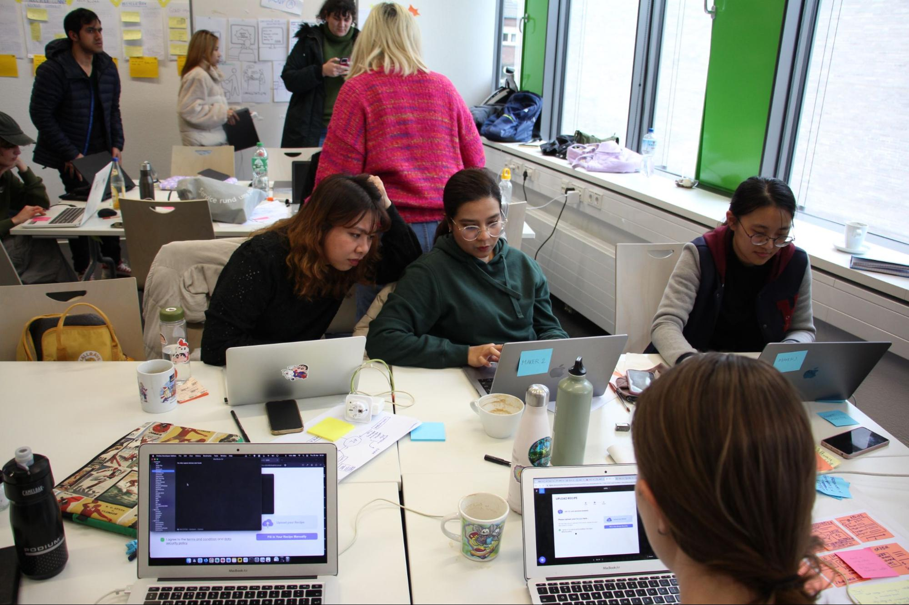
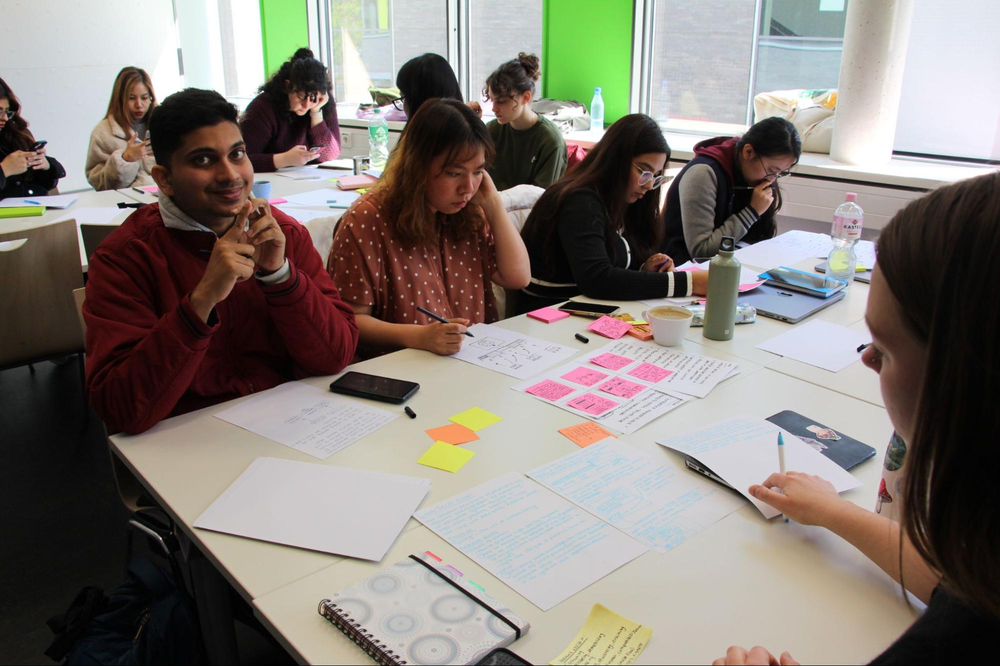

Design Sprint · Sustainability
Fantastic Plastic was the culmination of an intense yet exhilarating 5-day Sprint Challenge. Partnering with Evonik, a leader in the chemical industry, we were challenged to develop a web-based application to support plastic recycling and a circular economy.
The sprint demanded rapid ideation, user interviews, storyboarding, and prototype development — all compressed into five days. A genuine test of design under pressure.

